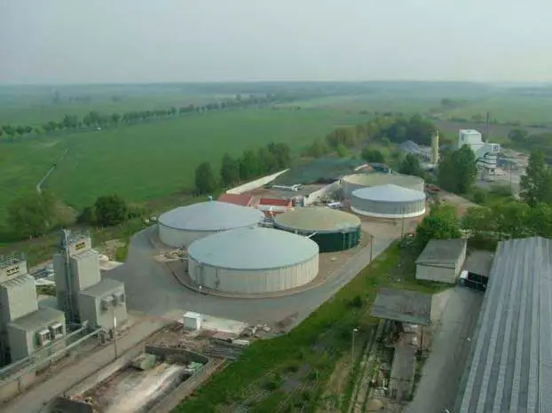
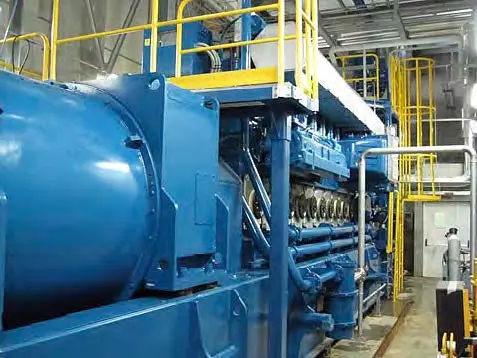
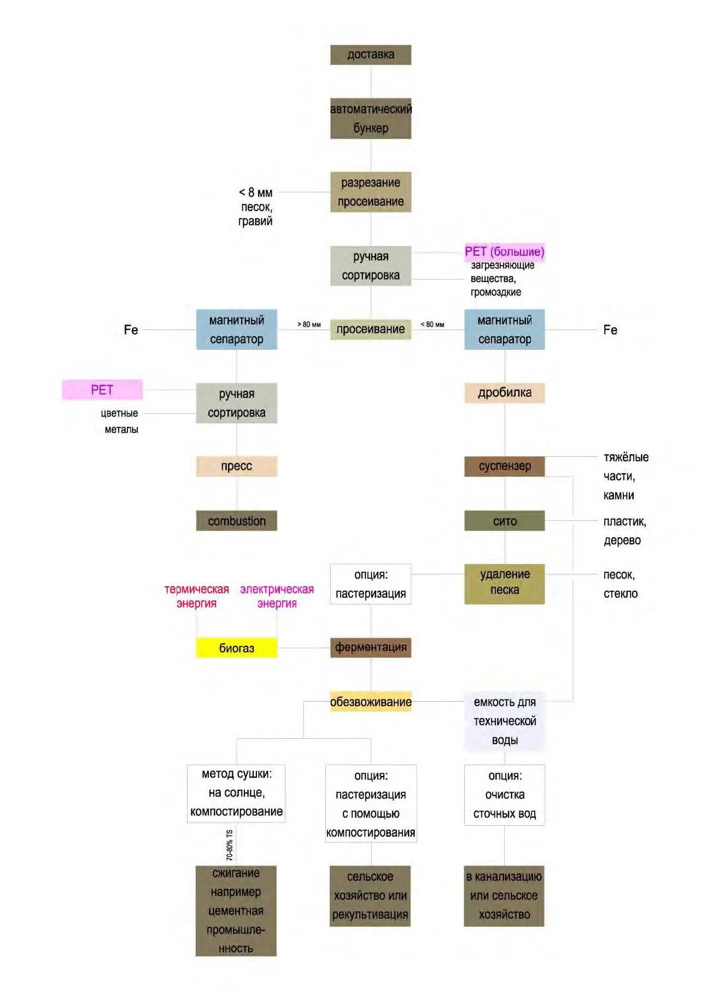

MSW Processing and Recovery Plant
The central core of the cluster. Capacity: 300,000 t/year.

Process stages
- Preparation: Dissolving the feedstock in water with turbulence.
- Separation: Automatic removal of glass and metals.
- Fermentation: Anaerobic digestion (15-day cycle).
- Cogeneration: Biogas and electricity production.

Economic efficiency
- Energy: Full cluster autonomy
- Greenhouse heating: 100% savings (on-site heat)
- Revenue: Biohumus and recyclables sales
Process flow scheme
